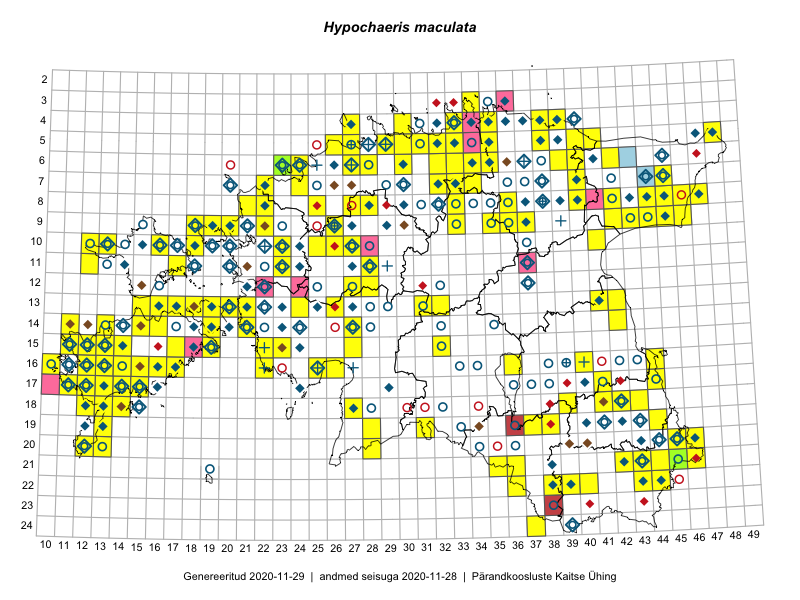

Hypochaeris maculata
Uuendatud: 2016-12-02
Kaardile koondatud taksonid: Hypochaeris maculata L.

Kaart põhineb 175 vaatlusel. Taksonit on leitud 120 ruudust.
Kuvatud viited 20 esimesele andmebaasikirjele, ülejäänud PlutoFis
- Malle Leht: 2015-07-09: : ala
- Toomas Kukk, Thea Kull, Timo Luhamäe, Ott Luuk, Peedu Saar: 2015-06-28: 13-26: ala
- Rein Kalamees, Kersti Püssa: 2015-08-09: 05-31: ala
- Peedu Saar, Ott Luuk: 2015-06-21: 14-42: ala
- Rein Kalamees, Kersti Püssa: 2015-05-28: 21-45: ala
- Rein Kalamees, Kersti Püssa: 2015-05-28: 21-46: ala
- Toomas Kukk, Kersti Tambets, Sten Mander, Janika Sammasto, Timo Luhamäe: 2014-07-30: 21-45: ala
- Peedu Saar, Sander Laherand: 2015-05-30: 06-42: ala
- Peedu Saar, Liina Oja: 2015-07-20: 08-44: ala
- Peedu Saar, Liina Oja: 2015-07-22: 08-45: ala
- Peedu Saar, Liina Oja: 2015-07-24: 09-45: ala
- Toomas Kukk, Mari Reitalu: 2014-06-20: 17-12: ala
- Toomas Kukk: 2014-06-17: 15-19: ala
- Toomas Kukk: 2014-06-18: 18-14: ala
- Rein Kalamees, Kersti Püssa: 2015-09-01: 04-30: ala
- Rein Kalamees, Kersti Püssa: 2015-09-01: 05-30: ala
- Rein Kalamees, Kersti Püssa: 2015-08-25: 04-35: ala
- Rein Kalamees, Kersti Püssa: 2015-09-24: 04-38: ala
- Rein Kalamees, Kersti Püssa: 2015-06-06: 04-33: ala
- Rein Kalamees, Kersti Püssa: 2015-07-15: 21-45: ala